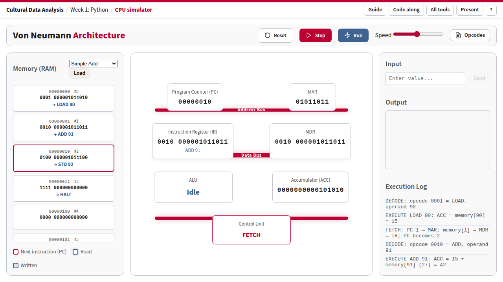

How a computer runs a program, one step at a time · Week 1: Python
The simulator is a small computer in the style of John von Neumann's 1945 design. The program and its data sit side by side in the same memory. The processor repeats one cycle for every instruction: fetch it from memory, decode it, execute it. Every line of Python you write in this course ends up as long runs of instructions like these.
Open the simulator Open it with Simple Add loaded

Simple Add after six steps: the ADD instruction has just run, so the accumulator holds 42. Each memory cell shows its bits and, below them, what they mean.
| Part | What it is | What to watch |
|---|---|---|
| Memory (RAM), left | 100 numbered cells. Each shows its address (8 bits, and #0 to #99), its content (16 bits, split into the 4-bit opcode and the 12-bit operand), and what the bits mean: → LOAD 90 for a cell of the program, = 15 for a data cell. Hover over a cell to see both readings of the same bits. Cells 0 onwards hold the program; cells 90–92 hold the data. | The crimson border marks the next instruction (the cell the PC points to). A blue glow marks the cell just read; a blue fill marks the cell just written. |
| Program Counter (PC) | The address of the next instruction. | It goes up by one at every fetch. Jumps (JMP, JZ) overwrite it: that is how loops happen. |
| MAR (memory address register) | The address the processor is about to read or write. | During fetch it copies the PC; during LOAD/ADD/SUB/STO it holds the data address (90, 91, 92). |
| MDR (memory data register) | The value that has just come from memory. | During fetch it holds the instruction; the IR then copies it. |
| Instruction Register (IR) | The instruction being worked on, in 16 bits. | The line below the bits spells it out, for example LOAD 90. |
| Accumulator (ACC) | The one working register. Every calculation starts and ends here. | The result of ADD and SUB appears here; STO copies it to memory. |
| ALU | The arithmetic logic unit, which does the sums. | Shows the instruction name while an instruction executes, otherwise Idle. |
| Control Unit | Runs the cycle. | Shows the phase coming next: FETCH, DECODE or EXECUTE (or HALTED, WAIT_INPUT). |
| Buses | The wires between processor and memory. The address bus carries where, the data bus carries what, the control bus carries commands. | The buses used in the last step light up in crimson. A fetch uses address and data; a decode only control; LOAD/ADD/SUB/STO use all three. |
| Input, right | A box that becomes active when the program asks for a value (IN). | Type a number and press Enter or Send. |
| Output | Values the program has sent out with OUT, in binary and decimal. | Countdown writes 5, 4, 3, 2, 1 here. |
| Execution Log | One sentence per step, saying what just happened. | Read it aloud while stepping: it is the script for the walkthroughs below. |
| Control | Key | What it does |
|---|---|---|
| Program menu + Load | Puts one of three example programs and its data into memory and resets the processor. | |
| Step | Space | Runs one phase: fetch, decode or execute. One instruction takes three steps. |
| Run / Pause | Enter | Steps automatically. The Speed slider sets the pace (right is faster). |
| Reset | R | Reloads the current program and sets every register to 0. |
| Opcodes | Shows the instruction set (the table in section 3). | |
| Presentation mode | P, then + / − | Enlarges the page for the lecture hall and shows its address in the top bar. |
| Help | ? | Lists the shortcuts. |
Links that open in a given state. Add these to the address to prepare a slide or a class exercise:
?program=add, ?program=loop, ?program=input: load that program.&steps=N: press Step N times, for example ?program=loop&steps=15 stops just after the first number is output.&present=1: open in presentation mode.Every memory cell holds 16 bits. When the processor fetches a cell as an instruction, it reads the first 4 bits as the opcode (which command) and the other 12 bits as the operand (usually a memory address):
0001 000001011010 └──┘ └──────────┘ LOAD 90
The same 16 bits could just as well be read as the number 4186. Nothing in the cell says whether it is an instruction or data: it depends only on whether the PC points at it. That is the heart of the von Neumann design. The simulator labels the cells of the loaded program as instructions (→ LOAD 90) and the others as numbers (= 15); hover over any cell to see both readings.
| Opcode | Name | What it does | Memory? |
|---|---|---|---|
| 0000 | NOP | Nothing. | |
| 0001 | LOAD a | ACC = memory[a] | read |
| 0010 | ADD a | ACC = ACC + memory[a] | read |
| 0011 | SUB a | ACC = ACC − memory[a] | read |
| 0100 | STO a | memory[a] = ACC | write |
| 0101 | JMP a | PC = a: continue at address a | |
| 0110 | JZ a | If ACC is 0, PC = a; otherwise carry on | |
| 0111 | IN | Wait for a number in the Input box, put it in ACC | |
| 1000 | OUT | Send ACC to the Output box | |
| 1111 | HALT | Stop |
Open with Simple Add loaded 12 steps · about 5 minutes
addr bits instruction 0 0001 000001011010 LOAD 90 ACC = 15 1 0010 000001011011 ADD 91 ACC = 15 + 27 2 0100 000001011100 STO 92 memory[92] = 42 3 1111 000000000000 HALT ... 90 0000000000001111 data: 15 91 0000000000011011 data: 27 92 0000000000000000 result goes here
| Step | Phase | What happens | Point out |
|---|---|---|---|
| 1 | FETCH | PC 0 → MAR; memory[0] → MDR → IR; PC becomes 1 | Address and data buses light up. The PC already points at the next instruction. |
| 2 | DECODE | opcode 0001 = LOAD, operand 90 | Only the control bus: decoding happens inside the processor. |
| 3 | EXECUTE | ACC = memory[90] = 15 | Cell 90 glows: the processor goes back to memory, this time for data. |
| 4–6 | F · D · E | ADD 91: ACC = 15 + 27 = 42 | The ALU shows ADD. The result exists only inside the processor so far. |
| 7–9 | F · D · E | STO 92: memory[92] = 42 | Cell 92 turns blue: the first write. It now holds 0000000000101010, which is 42. |
| 10–12 | F · D · E | HALT | The Control Unit shows HALTED. Four instructions took twelve steps. |
x = 15 + 27 - 2? (Add one SUB and a cell holding 2.)Open with Countdown loaded 105 steps in total · step through the first round, then press Run
addr instruction meaning 0 LOAD 90 ACC = 5 (start value) 1 STO 91 counter = ACC 2 LOAD 91 ACC = counter ◄─ loop starts here 3 JZ 8 if ACC is 0: go to 8 (HALT) 4 OUT show the counter 5 SUB 92 ACC = ACC − 1 6 STO 91 counter = ACC 7 JMP 2 back to address 2 ─┘ 8 HALT 90: 5 91: counter 92: 1
In Python this is
counter = 5
while counter != 0:
print(counter)
counter = counter - 1
| Steps | What happens | Point out |
|---|---|---|
| 1–6 | LOAD 90, STO 91: counter = 5 | Set-up, done once. |
| 7–12 | LOAD 91, then JZ 8 with ACC = 5 | The log says ACC is 5, not 0, so carry on: this is the test of the while. |
| 13–15 | OUT | 5 appears in Output. Link to this state |
| 16–21 | SUB 92, STO 91 | counter becomes 4; cell 91 turns blue. |
| 22–24 | JMP 2 | Watch the PC: it jumps back from 8 to 2. The crimson border moves back up the memory. Link to this state |
| 25–102 | Four more rounds, 21 steps each | Press Run and turn up the speed. |
| 103–105 | ACC is 0: JZ jumps to 8, HALT | Output shows 5, 4, 3, 2, 1. Link to the end |
0 IN wait for a number 1 OUT show it 2 JMP 0 and again
This program never halts; press Reset to stop. It is the pattern of every interactive program: wait for input, react, wait again.
0001000001011010. Is that an instruction or the number 4186? Who decides?while counter != 0.Real processors have many registers rather than one accumulator, work on several instructions at once (pipelining), keep copies of memory close by (caches), and use far larger instruction sets. The phases here are also simplified: a fetch is shown as one step, while real hardware spends several clock ticks on it. None of this changes the basic idea the simulator shows: a program is data in memory, and a processor runs it by fetching, decoding and executing one instruction after the other.
Used in the Week 1 lecture. Source: tools/cpu.